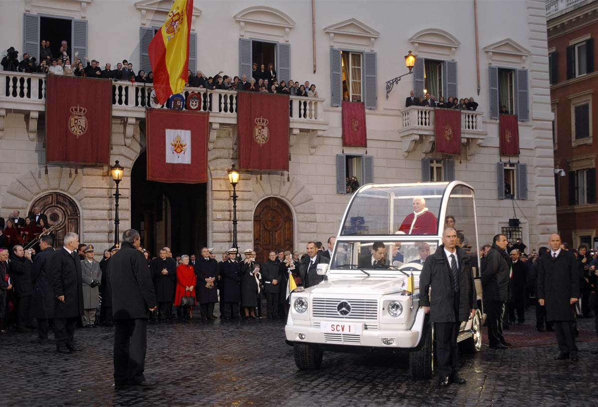

En tuhaf arabalar arasında bulunan Papamobil, Katolik Kilisesi papasının halka açık alanlarda kullanması için özel olarak tasarlanmış bir motorlu araçtır. Bu araç, papanın büyük kalabalıkları selamlarken daha görünür olmasını sağlamak için yapılmıştır. Papa VI. Paul, 1965 yılında New York’ta kalabalığı selamlarken modifiye edilmiş bir Lincoln Continental’ı ilk kez kullandığından beri Papamobiller için pek çok farklı tasarım olmuştur. Bazılarının üstü açıkken, bazıları kurşun geçirmez camlarla kaplıdır. 1981’deki II. Ioannes Paulus’a yönelik suikast girişiminin ardından papayı korumak için arabaların tasarımı bir hayli değişti. Ayrıca bazıları papanın oturmasına izin verirken, diğerleri onu ayakta tutacak şekilde tasarlanmıştır.
| Anasayfa | 1 | 2 | 3 | 4 | 5 | 6 | 7 | 8 | 9 | 10 | 11 | 12 | 13 | 14 | 15 | 16 | 17 | 18 | 19 | 20 |